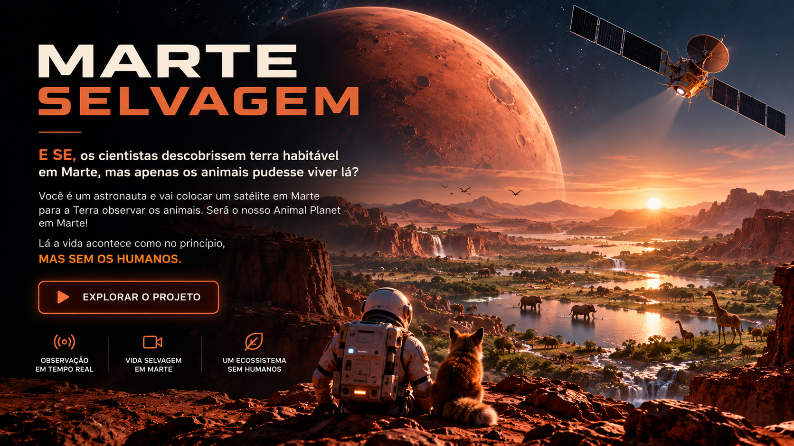

OBSERVE
Use o satélite e ferramentas de observação para acompanhar os animais sem interferir diretamente em suas vidas.

E se os cientistas descobrissem terra habitável em Marte, mas apenas os animais pudessem viver lá?
Você é um astronauta e sua missão é colocar um satélite em Marte para que a Terra possa observar os animais e acompanhar o nascimento de um ecossistema extraordinário.
Será o nosso Animal Planet em Marte: um mundo de paisagens selvagens, espécies diferentes e histórias que acontecem sem roteiro.
Aqui, os animais exploram, procuram alimento, descansam, formam vínculos e enfrentam os desafios do ambiente. Você não controla cada movimento — observa a vida se desenrolar.
Lá, a vida acontece como no princípio. MAS SEM OS HUMANOS.
Use o satélite e ferramentas de observação para acompanhar os animais sem interferir diretamente em suas vidas.
Animais com necessidades e comportamentos próprios exploram o habitat, encontram alimento e reagem ao que acontece ao redor.
Com o passar do tempo, o ambiente muda e cada observação pode revelar uma nova história da vida em Marte.
Você não controla a natureza.
Você acompanha sua história.